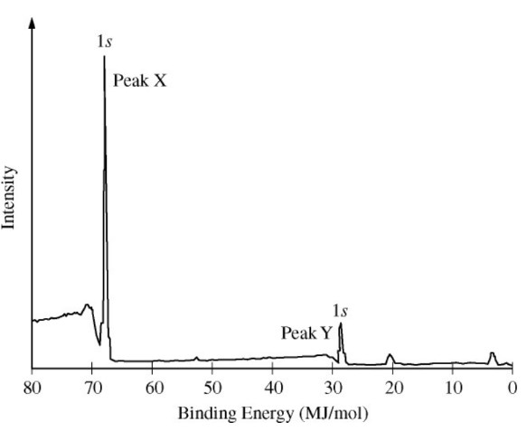

A sample containing atoms of \(\ce{C}\) and \(\ce{F}\) was analyzed using x-ray photoelectron spectroscopy. The portion
of the spectrum showing the \(1s\) peaks for atoms of the two elements is shown above. Which of the following correctly
identifies the \(1s\) peak for the \(\ce{F}\) atoms and provides an appropriate explanation?
Binding energy provides information indicating the strength of an electron's attraction to the nucleus. The higher the intensity, the more energy would be required to remove an electron.
The reason why \(\ce{F}\) electrons are hard to remove is because the nuclear charge is very high relative to \(\ce{C}\).
Coulomb's law approximates the electric force of attraction, where larger charges result in larger forces.
Carbon has a nuclear charge of +6, whereas fluorine has a nuclear charge of +9.
Each electron in fluroine therefore experiences a much larger force compared to individual electrons in carbon.